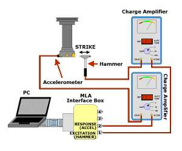

LMP>Research Guidelines>USICAV>Milling process stability at high cutting speed
INTRODUCTIONThe high speed machining is a fabrication process with a huge potential. Not only for increasing the material removal rate, but also for producing parts with better surface finishing, free from fin and residual stresses. These results are obtained only when the process is maintained in stability zones, free from regenerative vibrations. There are many definitions for high speed machining. One of them, applied on speed ranges selection for machining performance tests, according ANSI/ASME norm (Hocken, 1991), is related to tool dynamics and machine head. It considers that the high speed machining occurs every time that the tool teeth passage frequency approaches a substantial fraction of the natural frequency of dominating vibration mode. The regenerative vibrations are characterized by the system oscillation in one or more natural frequencies, without external forces interference. Their main source is an auto-excitement mechanism during chip formation, and they occur mainly under high removal rates. The consequences are the surface and dimensional quality worsen, the excessive tool wear or tool break, and the process productivity limitation. Their presences depend on the following variables:
OBJECTIVESThis work seeks a larger comprehension of the phenomena associated to the high speed milling process dynamics and leans to determinate conditions which lead the process to stability regions, allowing high removal rates and assuring machined parts high dimensional precision and surface quality. PROCEDURESThe machining operations are influenced by the machine-tool dynamics and cutting process dynamics. The first one is analyzed using known methods and theories of structure dynamics and it is currently, from both mentioned dynamics, the most understood. The cutting process dynamics are less known, once the experimental and theoretical methods for their study are still in progress, and many issues weren’t yet answered. Features from this work:
 |
| Contact:
USICAV Rolf Bertrand Schroeter Prof. Dr. Eng. |
Last update 04.07.2006 |